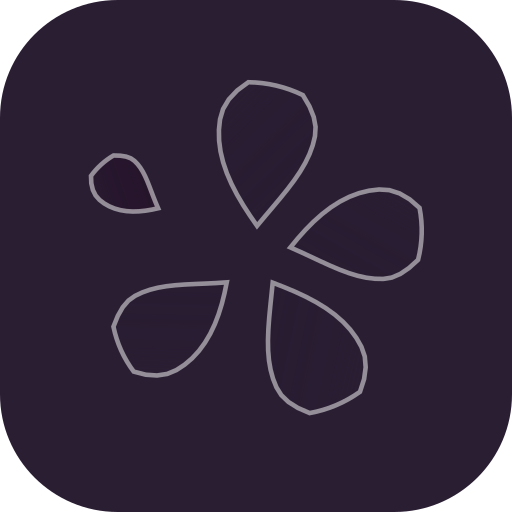

A meadow is not arranged. It is scattered, and the scatter is the beauty.
Brand kit & design system · v1.0Ten sections · one idea
02Premise
Nothing here was placed by hand.
A seed house sells a future it cannot photograph. So the identity does not show the flower. It shows the moment the flower stops holding on: four petals still attached, one already gone, and the gap where it was.
That gap is the whole brand, and it is also the one rule everything else obeys — if a layout is perfectly centred, it is wrong. The type is set slightly out of register. The photograph is a document of the wind, not a backdrop. The accent belongs to the petal that left, and nowhere else.
Belief
Arrangement is the enemy of a meadow. A good page looks gathered, not composed.
Enemy
The floral default: a symmetrical bouquet, a script logotype, blush and sage, petals evenly spaced around a circle. It is the logo on a thousand candles.
Material
Two-pass risograph on 300gsm uncoated stock, sun-bleached. Magenta first, then green, 2px out of register.
Test
Reject the work if it could be centred without losing anything.
01
The mark is a placement table, not a drawing.
Because
A drawing has one size. A table can be re-struck at any scale, and the taken petal can be pulled further out for a favicon.
Not when
The surface is under 16px — then the compact, which is a different drawing, not a smaller one.
Breaks next
Replacing the table with a traced SVG. It freezes five petals at one scale and the rule dies.
02
One accent, and it belongs to the petal that left.
Because
The accent is a story, not a mood. Spread it across buttons, links and headings and it becomes decoration.
Not when
An error needs the loudest colour. Errors use signal too — but on the wash, never as a field.
Breaks next
Using signal for a primary button. The button is ink. The accent is the wind.
03
Display type is a printed serif, never a script.
Because
A script would repeat the enemy. Instrument Serif at 104px and −0.035em is a field-guide title, not a wedding invitation.
Not when
The copy is under 24px. Below that the reading face carries the name.
Breaks next
Adding a second display face "for variety". One display voice, at every size.
04
Photographs are documents, never decoration.
Because
The three plates are the same field at three hours. They are evidence that the thing exists.
Not when
The crop would cut the horizon. Then use the drift, which is the same petal, scattered.
Breaks next
Recolouring a photograph to match the palette. Duotone at 20%, never a filter.
A flower that has lost a petal is still a flower. That is the whole licence.
The premise, in one line
03Calyx
Five petals. One gone.
A petal is narrow at the base, widest at 72% of its length, rounded at the tip, and bent by 8–16% of that length. Four hold the calyx at irregular spacing — 74°, 72°, 80° — and the fifth sits 134° away, small, further out, in the gap the wind opened. It is the only place the accent is allowed in the mark.
964832 · compact16 · compact
Primary · 24px min
Compact · 16px min
Glyph · favicon
One ink · print
Reverse · on ink
App icon

The wordmark is outlined from Instrument Serif — never live text. "Wind" is set in italic and opened to 0.012em; "Wildflower" is closed to −0.008em. The second word is the one the wind is in.
The placement table
Every mark in the family is this table, re-struck. Nothing is drawn twice.
Petal
Angle
Base r
Length
Width
Bend
Ink
01
2°
4.6
21.0
0.35
0.10
ink
02
76°
5.4
19.5
0.35
0.14
ink
03
148°
4.8
20.5
0.35
0.08
ink
04
228°
6.0
18.5
0.35
0.16
ink
05
296°
16.6
10.5
0.38
0.20
signal
Clear space
One petal length on every side — 10.5 units at 64. No text, no rule, no other mark inside it.
Never
Never recolour the petals individually, never outline, never rotate the group, never put it on a photograph without a scrim at 60%.
Alignment
Optically align to the calyx, not to the bounding box: the mark sits 1.5 units above the wordmark's baseline.
04Press
Six colours, three of them ink.
The paper is warm because it is paper. The magenta is the flower. The green, gold and sky are plate inks lifted from the photograph — they carry shape and never carry text, because on this stock they cannot reach 4.5:1 and pretending otherwise is how a palette becomes a brochure.
ground
Sun-bleached stock#f7f0e4
The page. Never a card.
plate
Sheet#fffcf6
Reading only, laid on the stock.
ink
Shadow under the flowers#22181b
All text. All rules.
muted
Second voice#6c5b57
Captions, metadata.
wash
Petal tint#f2dbe8
Surface only. Never text.
signal
Cosmos, dried#7c2a76
≤8% of a viewport. One job at a time.
leaf
Plate ink 2#4f6238
Shape, and large type at a push.
gold
Plate ink 3#c8873a
Graphic only. 2.66:1 — it fails.
sky
Plate ink 4#a9c4dc
Surface only. 1.60:1 — it fails.
Every pair, computed
Fifteen pairs recomputed from hex at build time. The two that fail are printed with the job they may not do.
body-1 · Instrument Sans 400 · 18px · lh 1.62 · 64chreading
The seed is the smallest thing a plant makes and the largest thing it promises. We pack them in April, from a field that is left alone from June, and we write the harvest on the tin in pencil because the weather always has the last word. Nothing in this catalogue is a guarantee. Everything in it is an invitation to a summer you have not had yet.
Every row is the token, not a picture of it. If a size changes here, it changed in the sheet.
Spacing · 4px base, 11 steps
Radius · paper has corners
0
2
6
12
999
Print surfaces are square. A 6px radius is a screen concession, not a style.
Elevation · light from above the field
sheet0 1px 0 / 6%
lifted0 6px 18px −8px / 28%
pinned0 22px 44px −22px / 42%
Shadows are warm and short. Nothing floats above the page; things are laid on it.
Motion · nothing arrives twice
drift · 620msstate, hover, focus
settle · 1200msfield entrances, once
snap · 140mswhat the user caused
Under reduced motion the still frame is the design: everything rests at 60% of its travel.
06Kit
A form that admits the weather.
One field, one error, one disabled state, and an error summary that names the field it is about. Focus is signal at 2px with a 2px offset — visible on paper and on ink, which is the only test that matters.
2 things need you
Email — we need somewhere to send the harvest date.
A cast is not a set of new drawings. Each companion is the one petal, placed by a different rule — so a packet, a tag and a page all come from the same gesture. Nothing below introduces a second shape.
Seed headThe petal at 27–38% on a 2.6-unit stem. Packets, tins, the printed seal.Wind lineOne hairline with two petals caught on it. Section breaks, envelope backs.Packet stampThe full mark, squared. Used where a packet must be sealed and signed.Three hoursMorning, noon, the one that got away. Used for the seasonal calendar.
08Season
What it looks like in the post.
Six artefacts, built from the tokens and nothing else: a tin, a folded card, a swing tag, a plate, a browser card, and the one place a photograph is allowed to be the whole surface.
No. 042.4 g
Cosmos ‘Purity’
“Sow thin, in May, where the wind already goes.”
Field note 0441°N
Reserved
Harvest 2026
Plate 03 · the lower meadow · 12:40
Seeds from a field that is left alone.
09Sheet
Copy the sheet, not the screenshot.
Two layers that matter and one that does not. Primitives name the material once. Semantics name the job. A component is the only place a button knows its own colour. The night surface is a scope: the primitives keep their names and change their values, which is why nothing drifts after a theme flip.
wildflower-wind-tokens.css · light scope
tokens.json · what the gates read
10Ledger
What is proved, and what is not.
A guide that hides its gaps is a brochure. Everything in the left column was measured by a command in this folder; everything in the middle was not measured at all; everything on the right is a decision someone should revisit.
Proved
15 contrast pairs recomputed from hex at build time; the stated ratios are the computed ones.
9 primitives in tokens.json match the token CSS at the same value, in both scopes.
Mark at 16px is a different drawing, not a scaled one — the compact is four placements, not five.
Wordmark is outlines from Instrument Serif. No font file can change the name.
Reduced motion leaves a still frame that is the design, not a frozen one.
Not verified
Print registration. The 2px misregistration is specified; it has not been proofed on a risograph.
Stock colour. #f7f0e4 is a screen approximation of a paper that has not been chosen.
Photograph licence. The three plates were supplied by the client; no licence record ships with them.
Figma parity. The export carries geometry and variables, not the bend curve of the petal.
Known gaps
gold on ground, 2.66:1 — graphic only. It may never carry a label, including a tin's variety name.
sky on ground, 1.60:1 — surface only. Never a rule, never an icon that must be read.
The cast has four members. The fifth — a stem that breaks — is drawn but not shipped: it reads as a weed.
No dark-mode photograph treatment. The closing plate is not re-graded at dusk.